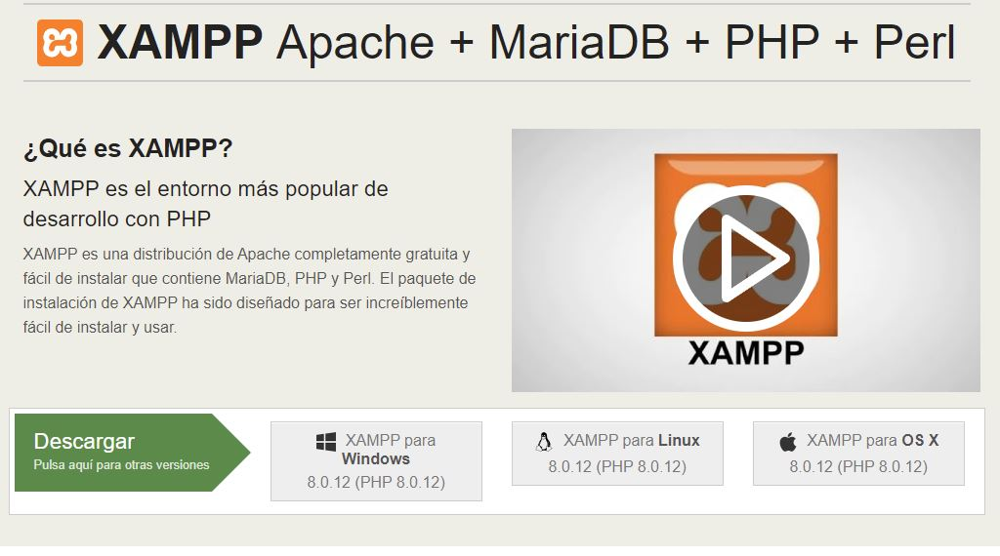
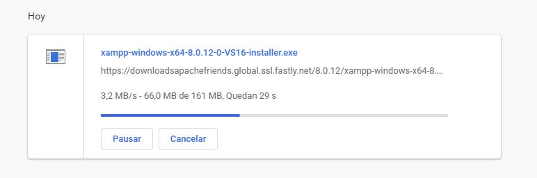
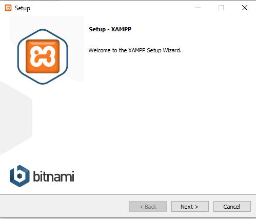
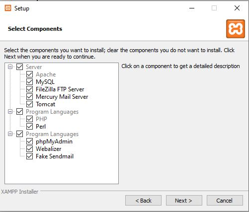
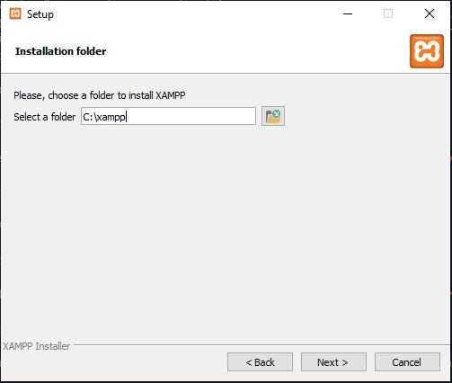
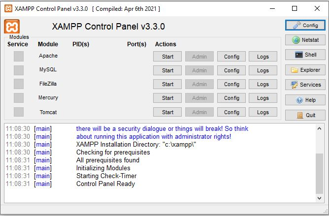

¡XAMPP PARA WINDOWS!
Para descargar e instalar XAMPP en windows debemos seguir una serie de pasos muy sencillos:
- Buscamos "XAMPP windows" en nuestro navegador
- Entramos a la página pinchando aquí
- Buscamos en la página principal el botón descargar XAMPP para windows
- Procedemos a descargarlo
Entrando en el enlace que he proporcionado arriba entráis directamente a la página principal para descargar XAMPP
Ahora solo pulsad en XAMPP para windows y empezará la descarga
Abrid el instalador cuando haya terminado la descarga y que empiece la instalación de XAMPP
Ahora empezada la instalación nos enseñan los componentes que podemos quitar ya que nos interesan, en mi caso he dejado todos
Ya solo queda seleccionar en carpeta instalaremos XAMPP y ¡a ejecutarlo!
Ya tenemos nuestro XAMPP instalado
